Appalachia
アパラチア — Fallout 76の舞台
概要
アパラチアは、大戦前のウエストバージニア州と、バージニア州やオハイオ州の一部を含む広大な地理的領域に付けられた名称である。
いくつかの異なる地域名を持つこの地域は、Fallout 76のゲームワールドとして機能している。
大戦による破壊と殺戮の大部分から、相対的な孤立と戦略的目標の欠如により免れたものの、ウエストバージニア中核部の生存者の多くは、その後の数年間でスコーチ病により命を落とした。
2102年、Vault 76のVault居住者たちが25年間の隔離生活を経てアパラチアに出現し、荒野の奪還を開始した。
2103年以降、周辺地域からの生存者たちがアパラチアへの再入植を始めている。
背景
初期の歴史
アパラチアは豊かな歴史を持つ地域である。
紀元前1000年頃には、アデナ文化やその後継の先住民文化がこの地域に存在し、その遺跡は今でも荒野の一部に残されている。
アパラチアは南北戦争中のウエストバージニア戦域における合衆国と南部連合の衝突の場でもあり、地域北部のフィリッピで戦闘が行われた。
アパラチアの歴史は鉱業と密接に結びついている。
1907年、モノンガー鉱山で爆発事故が発生し、数百人が犠牲となった。
この事件は、大戦前の数世紀後に起こる同様の出来事の前兆となった。
アパラチアはその自然の荒野でも知られ、ドリー・ソッズ・ウィルダネス、モノンガーela国有林、カナワ国立公園、シェナンドー国立公園など、国立公園局および森林局が管理する公園や保護区域が含まれていた。
21世紀
21世紀後半、アパラチアの政治的・経済的景観はフロンティアの起源や鉱業から変化したが、同じ問題に悩まされ続けた。
鉱業は依然として経済の主要な部分を占めていたものの、ウエストバージニア州は観光業、最先端ロボティクス、防衛など他の分野でもブームを経験した。
しかし、資源危機の圧力とポセイドン・エナジー、West Tek、アトミック・マイニング・サービス、ロブコ・インダストリーズといった巨大企業の台頭により、経済的繁栄は富裕層のみに恩恵をもたらした。
合衆国政府と軍は一般市民の窮状に無関心であり、状況を利用してアパラチア全域、特にアパラチア山脈の中心部に軍事施設のネットワークを拡大した。
これらの施設にはホワイトスプリング議会バンカー、シュガー・グローブ海軍情報基地、ナショナル・アイソレーテッド・ラジオ・アレイ、ATLAS天文台、そして3基の完全自動化ミサイルサイロが含まれていた。
アパラチア自動発射システムの一部であるこれらのサイロは、ロボット建設システムを備えており、わずか数時間で核弾頭の在庫を補充することが可能であった。
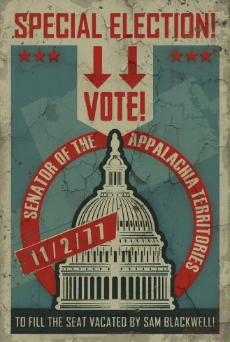
Vault-Tec Corporationは2031年にモーガンタウンの地元大学を買収し、Vault-Tec大学に改名した。
グラフトン鉄鋼社は北部アパラチア（後の毒の峡谷）に広範な環境被害を引き起こし、ホーンライト・インダストリアル・マイニング・カンパニーは南部（後の積灰の山）に同様の被害をもたらした。
ホーンライトが開発した巨大なバケットホイール掘削機「ロックハウンド」はブレア山から資源を採掘した。
アトミック・マイニング・サービスはクランベリー湿原で地下核実験を行い、強力な鉱石であるウルトラサイトを回収した。
2042年には「未来の都市」ワトガが設立された。
2061年以降、この地域は生活に困窮する労働者で溢れていた。
急速なオートメーション化により多くの鉱山労働者が職を失い、ロブコ・インダストリーズは地域のオートメーション化の主要プレイヤーであった。
オート・マイナーが鉱夫に取って代わり、警察やセキュリティといった公務員もプロテクトロンに置き換えられた。
フリー・ステイツはこの傾向に対抗した数少ない組織であった。
政府と軍の動機を深く疑い、政治的扇動者や裏切り者として中傷された彼らは、最終的にアメリカ合衆国からの脱退を宣言し、北東部の沼地に建設した要塞化バンカーに退いた。
オートメーション化の狂乱は投票法案6号で頂点に達した。
11月の投票に向けて、この法案は26億ドルの公債を発行し、アパラチア政府のすべての人間労働者を自動化システムに置き換えるプロセスを開始するものであった。
上院議員サム・ブラックウェルは最も著名な反対者であり、この法案を「ゆっくりと迫る災害」と表現した。
最後の日々
不穏な空気は2077年10月初旬に爆発した。
アトミック・マイニング・サービスによって町を追い出された家族たちの怒りから、10月3日に本格的な暴動が始まった。
ブレア山ではミック・フラナガン率いる鉱夫たちがホーンライト・インダストリアルが所有するロックハウンドを奪取し、推定数千万ドルの損害を出した。
しかし10月12日までに州兵が暴徒を武力で排除した。
別の暴徒グループはブラムウェルの鉱山会社所有のメガ・マンションを爆破した。
大戦
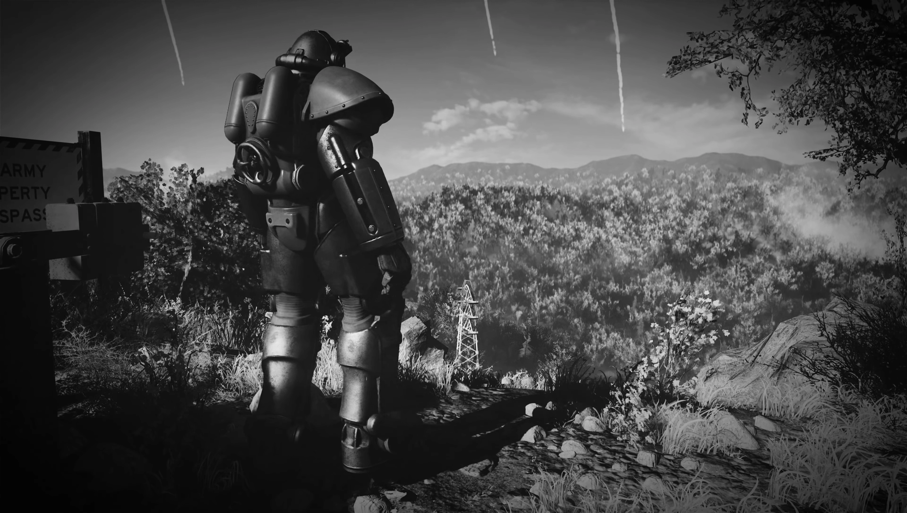
相対的に孤立していたにもかかわらず、アパラチア中核部は大戦中にいくつかの核攻撃を受けた。
積灰の山地域のキタリー鉱山跡付近で核爆発が確認された。
グラフトン周辺でも正確な数は不明だが核爆弾が着弾した。
サウス・マウンテン核クレーターは大戦の被害を示すもう一つの例であり、Vertibirdの墜落現場でもある。
戦後
政府関係者はホワイトスプリング議会バンカーに逃げ込んだが、エンクレイヴは非加盟メンバーに対する粛清を行った。
アパラチアは自力で生き延びるしかなく、エンクレイヴのリーダーであるトーマス・エックハートは中国との戦争の秘密裏の継続に注力していた。
チャールストンでは連邦政府からの指示がない中、チャールストン緊急政府が組織され、レスポンダーズと連携して活動した。
チャールストンは荒廃と混乱の中で安定のオアシスとなった。
タガーディーズ・サンダーなどの軍事部隊は指揮系統との連絡が途絶え、命令を待つことを選択した。
モーガンタウンはVault-Tec大学の学生が形成したライバル派閥により引き裂かれた。
裕福なバケーション客たちはアパラチア山中のリゾートに閉じ込められた。
食料が底をついた2078年の冬の経験は彼らの多くを精神的に壊し、暴力的なレイダー集団の誕生につながった。
その後数年間、レスポンダーズはチャールストンから勢力圏を拡大し、キャンプ・ベンチャーはブラザーフッド・オブ・スティールアパラチア支部の拠点となった。
クリスマス・デー2082年、プレザント・バレーレイダーのリーダーであるデヴィッド・ソープがサマーズビルダムをミニニュークで爆破し、チャールストンを壊滅させた。
スコーチ病
次の10年はアパラチア全域で社会秩序が着実に崩壊した時代であった。
フリー・ステイツはスコーチド検知システムの構築に苦戦し、ブラザーフッドは沼地での脅威封じ込めに必死の戦いを繰り広げた。
2095年までにブラザーフッドは最後の力を振り絞り、オペレーション・タッチダウンを発動したが、パラディン・タガーディを含む最も経験豊富なメンバーを失った。
ブラザーフッドは2095年8月に壊滅した。
レスポンダーズは反撃を試み、スコーチ病のワクチン開発や戦略的攻撃を行ったが、時すでに遅かった。
2096年11月、スコーチビーストの脅威がモーガンタウン空港に降りかかり、アパラチアにおける人類最後の主要拠点を破壊した。
スコーチビースト以外のスコーチドに対する免疫を持つスーパーミュータントやフェラル・グールも脅威であった。
2102年のVault 76の開放まで、人類はアパラチア中核部の地表に戻ることはなかった。
再入植
2103年、生存者たちがアパラチアに戻り始めた。
Vault居住者たちはヌカ・コーラ・ワクチネイテッドの形で予防接種を広く配布することで、スコーチビーストの脅威を軽減した。
入植者（入植者）はスプルース・ノブに拠点を築き、ファウンデーションを建設した。
クレイター・レイダーは墜落した宇宙ステーション「ヴァリアント1号」の残骸に基地を建設し、ザ・クレーターと呼ばれるようになった。
両グループはVault 79とその金塊の存在が知られるまで、不安定な膠着状態にあった。
ブラザーフッド第一遠征軍の3名がATLAS天文台に到着し、アトラス砦と改名して技術回収を開始した。
2104年にはレスポンダーズが再編され、ホワイトスプリング・リゾートを新しい本部として利用するようになった。
地理
環境
他の旧合衆国地域からの放射性降下物が地元の野生動物の多くを変異させ、制御不能な石炭鉱山の火災がブレア山周辺を灰で覆い、クラークスバーグ周辺の工場は白い粉塵を吐き出し、Vault 94のG.E.C.K.が破壊されたことで北東部に高度に変異した植物が生い茂った。
リージョン
アパラチアはFallout 76において8つのリージョンに分かれている。
森林地帯
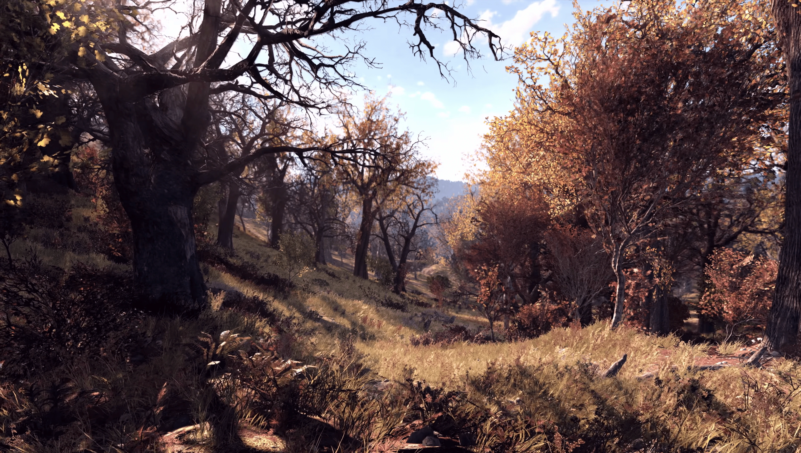
西のオハイオ川と東のアレゲニー山脈に囲まれた森林地帯は、その多様な動植物で知られるゆるやかに定義された地理的区域である。
大戦前は林業、農業、観光業、さらにはVault-Tecやホーンライト・インダストリアルによるハイテク分野など幅広い産業の本拠地であった。
豊富な植物と動物、十分な食料と水のおかげで、この地域は生存者たちの避難所となった。
レスポンダーズがインフラと資源を活用してアパラチアの再建を試みた主要な拠点であった。
積灰の山
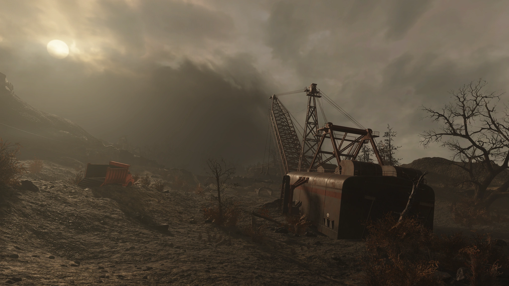
森林地帯の南端、チャールストンを越えた先に位置する積灰の山は、ブレア山周辺の汚染地域を指す。
歴史的に石炭と多数の金属の豊富な埋蔵量のおかげでアパラチア鉱業の中心地であったが、資源の自由な搾取、特に露天掘りにより、地面、水、空気が毒化され、その名前が付けられた。
鉱山のトンネル内で絶え間なく燃え続ける火災による煙と燃えかすが常に立ち上っている。
毒の峡谷
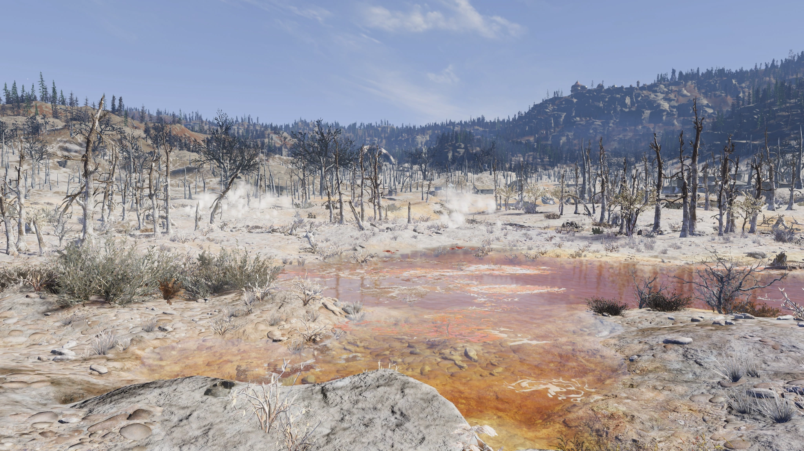
グラフトン市を取り囲む毒の峡谷は、グラフトン鉄鋼工場を経済発展の中心としていた。
同社の無責任な環境慣行とダリウス・アングラーによる産業妨害が、かつては緑豊かだった地域を生命がほぼ存在しない場所に変えてしまった。
汚染された水域にはあらゆる種類の変異水生生物が生息している。
荒れた境域
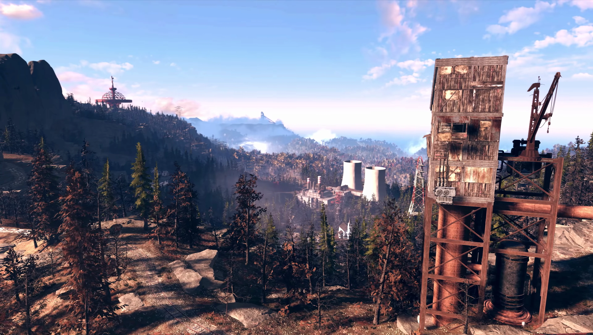
ウエストバージニアを二分するアパラチア山脈は人気のバケーション地であり、多数の自然公園と観光産業を支える広範なインフラが整備されていた。
スキーリゾート、民宿、キャビン、無数のハイキングトレイルが日々の困難から逃れたいアメリカ人に人気であった。
山々の奥深さと孤立性は軍にとっても魅力的であり、機密軍事基地やインフラに多額の投資が行われた。
巨大なスキーリフトステーションである世界の頂上、独特な建築のパレス・オブ・ザ・ワインディング・パス、歴史あるホワイトスプリング・リゾートなど、多くのランドマークが点在している。
沼地地帯
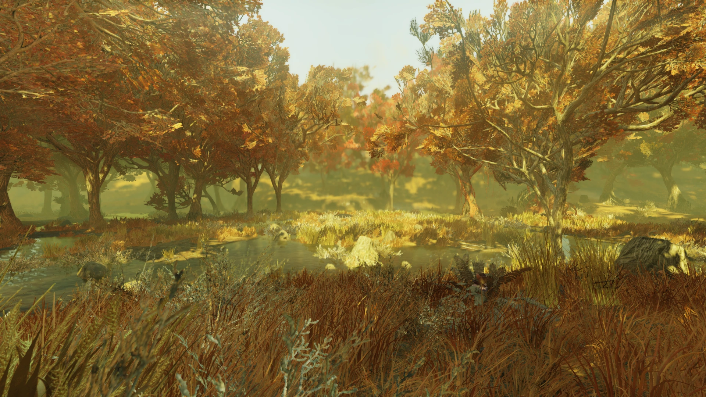
アパラチア山脈の東に位置する、ゆるやかに定義された湿地帯で、ハーパーズ・フェリーを中心とする。
密な森林と多数の沼地を持つ沼地地帯は、21世紀にはフリー・ステイツ運動の中心地として知られていた。
Vault 94 G.E.C.K.の爆発により急速に変異・拡大する沼地が生まれ、アングラーなどの独自の変異生物が生まれた。
沼地地帯固有のストラングラー・プラントは大戦後に無制限に成長し、建物や木々、さらには地面を這う光景が一般的である。
クランベリー湿原
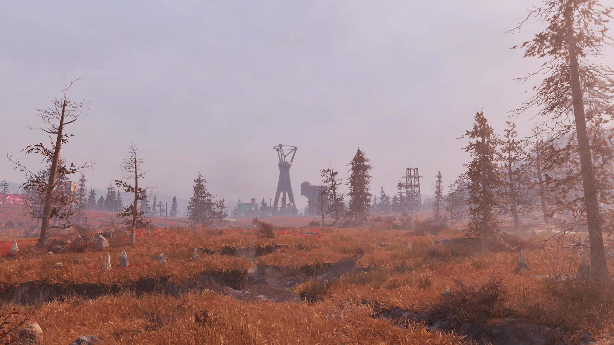
アパラチアの南東角を占めるクランベリー湿原は、この地域固有の色鮮やかな赤い植物からその名が付けられた。
先進都市ワトガは2042年にこの地域に設立された。
35年以上にわたる伐採、拡張、アトミック・マイニング・サービスによる地下核実験により、不安定でひび割れた大地が広がり、その上にワトガの高層ビルがそびえ立っている。
エックハート大統領は2085年までこの地域でスコーチビーストを隠し、その後アパラチアに解き放った。
Bogはこれらの怪物の拠点となり、アパラチアブラザーフッド・オブ・スティールさえも打ち破った。
スカイライン・バレー
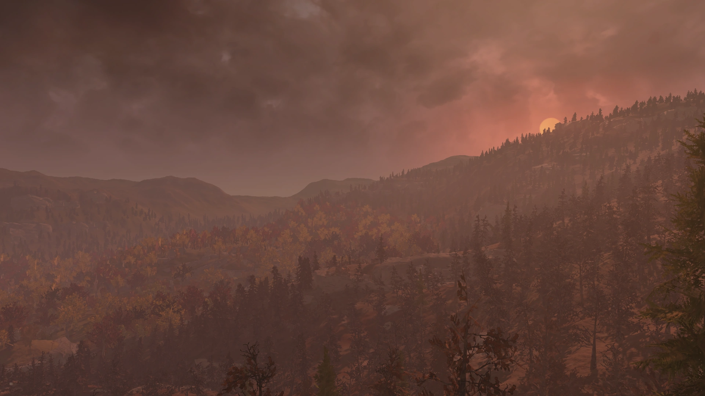
アパラチアの南部、積灰の山とクランベリー湿原の山間に位置するスカイライン・バレーは、バージニア州のシェナンドー国立公園とその景観道路スカイライン・ドライブの地域をカバーしている。
大戦前、この土地の多くはシュトルツ家が所有しており、ヒューゴはVault-Tec Corporationの取締役でもあった。
Vault 63の居住者の多くは戦争を生き延びたが、放射線にさらされグール化した。
気象制御装置の実験はロストと呼ばれる狂気のグールを生み出し、2105年までにダーク・ホロウ・マナー上空に巨大な雷嵐が形成されている。
バーニング・スプリングス
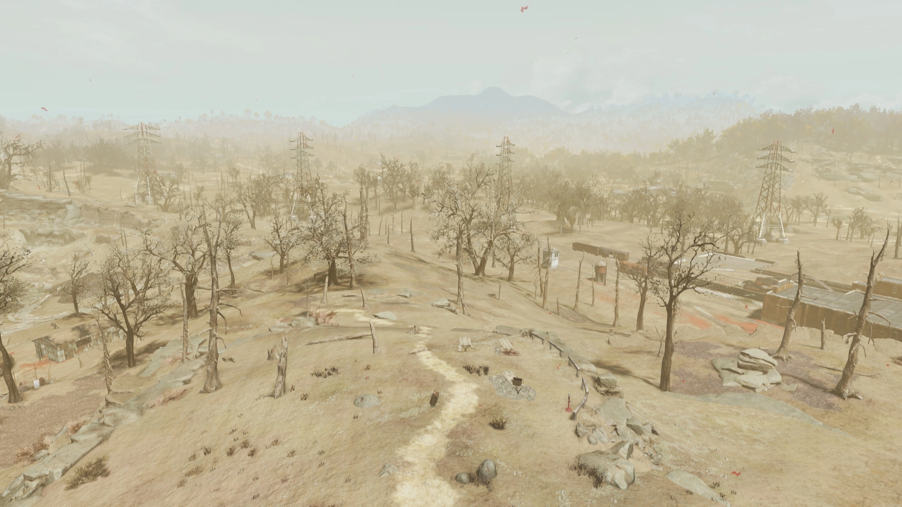
マップの西側、オハイオ川を渡り森林地帯のポイント・プレザントの対岸に位置するバーニング・スプリングスは、オハイオ州南東部の小さな農村地域を指す。
化学物質の流出により砂漠のような環境となり、「ザ・ラスト」と呼ばれる現象が発生している。
大戦前はアブラクソダイン・ケミカルが天然ガス埋蔵量のためにこの地域を支配していた。
戦後は知性を持つスーパーミュータントであるザ・ラスト・キングが率いるレイダー集団「ラスト・キングの軍勢」が支配している。
政治と行政
アパラチアはアパラチア準州の上院議員によって代表されていた。
サミュエル・ブラックウェルが2077年の辞任前の最後の上院議員であり、11月2日に選挙が予定されていた。
アパラチア準州の最後の知事はエヴァンス知事であった。
アパラチアは「Appalachian Territories」「Appalachia Territory」「Territory of Appalachia」「Greater Appalachia Region」「Appalachian State」など、さまざまな地域名で呼ばれている。
組織
大戦後、生存者の間でエンクレイヴ、フリー・ステイツ、ブラザーフッド・オブ・スティール、レイダー、レスポンダーズなど多くの勢力が形成された。
これらの勢力は2102年までにスコーチドによって全滅したが、エンクレイヴのAI「MODUS」などの痕跡が残っている。
2103年にはCraterの新レイダーとファウンデーションの入植者という2大勢力が台頭した。
カリフォルニアのロスト・ヒルズから派遣されたブラザーフッド第一遠征軍はアトラス砦を設立した。
ノート
- オールド・アパラチアブランドのバーボンはコモンウェルス各地で見つけることができる。
- アパラチアはクリエイション・クラブコンテンツ「キャピタル・ウエイストランド・マーセナリーズ」でも言及されている。
- 一部のキャラクターは、アパラチアが他の場所と比べて比較的良い状態であるとコメントしている。
バージニア出身のイセラ・メヒアは「あちらにはもっと多くのホットゾーンがある。住める場所も早々と漁り尽くされている。アパラチアは危険だけど、私たちがいた場所よりはましだ」と語っている。
舞台裏
- 現実世界の「アパラチア」は、ウエストバージニア州とその周辺地域を含む、アメリカ東部のアパラチア山脈にある広大な文化的・地理的地域を指す。
ウエストバージニア州は完全にアパラチアに含まれると見なされる唯一の州である。 - スカイライン・バレーアップデートにより、ゲームワールドは南方のバージニア州シェナンドー国立公園地域まで拡大された。
- バーニング・スプリングスアップデートにより、北西方向のオハイオ州南東部まで拡大された。
- リードデザイナーのフェレット・バドゥインは「ウエストバージニアは他の場所に比べて核攻撃が軽かった。だからこそ、人類が本当に復活を試みる機会があった」と述べている。
ギャラリー
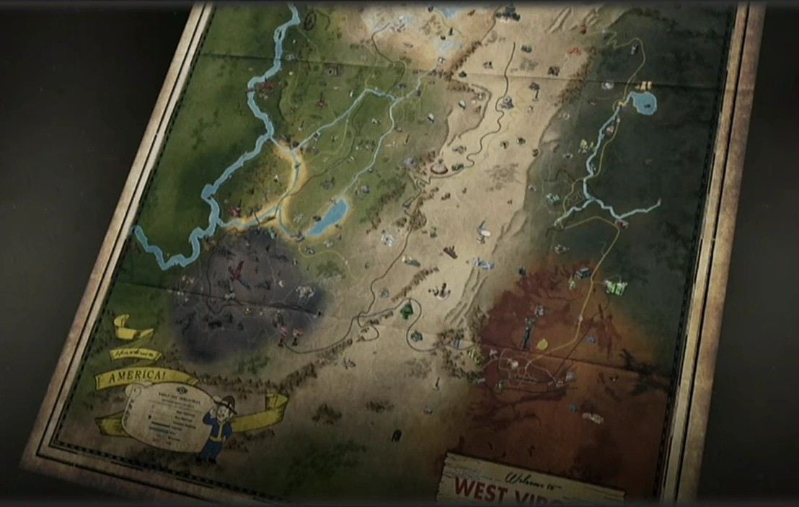
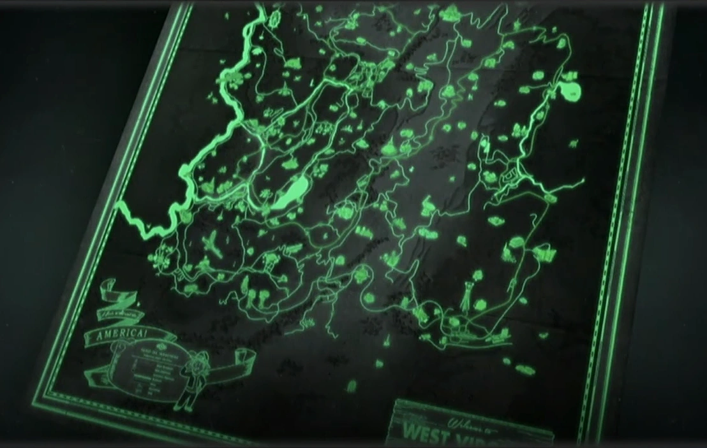
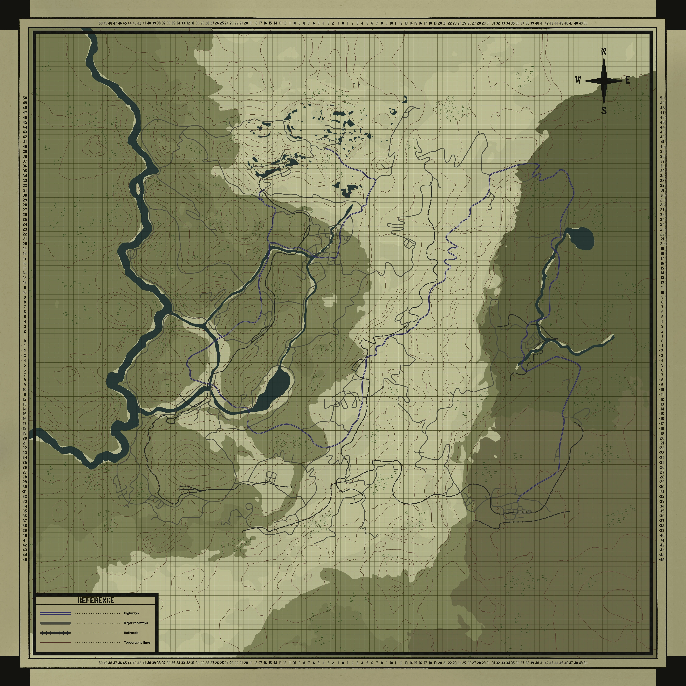

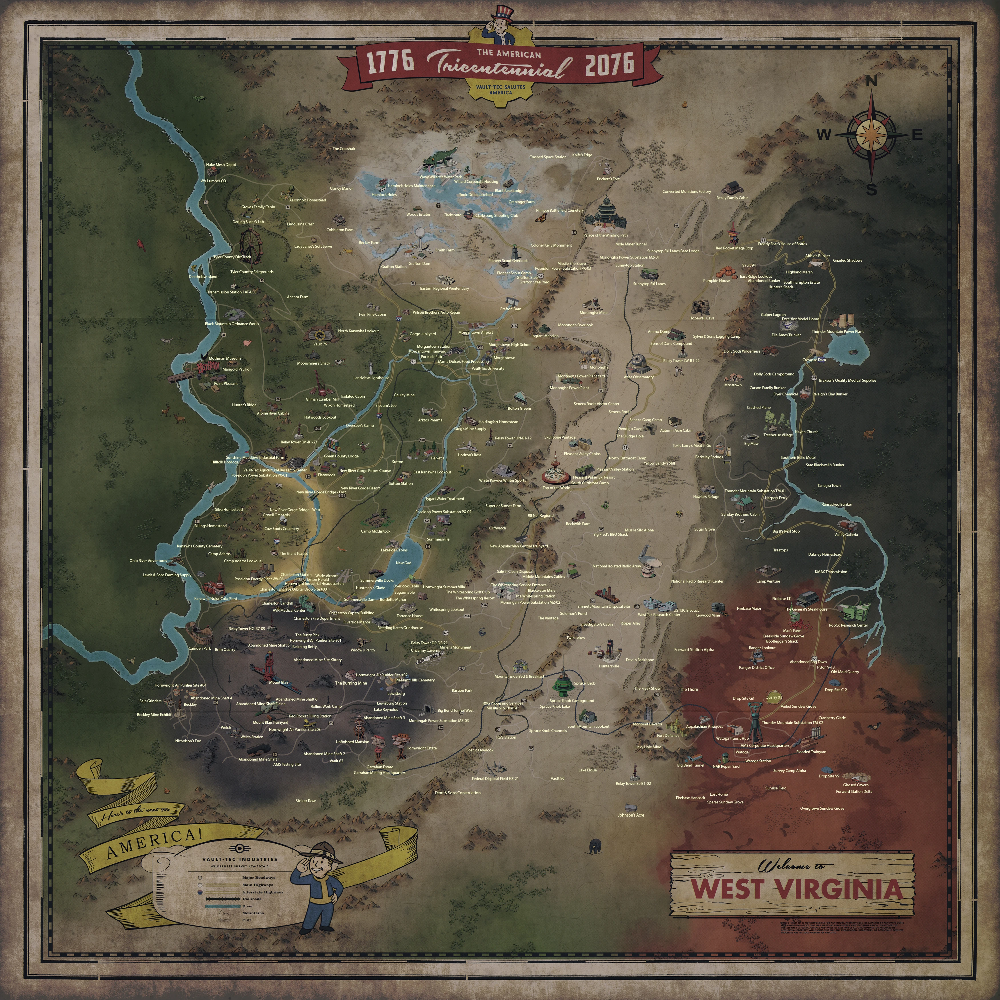
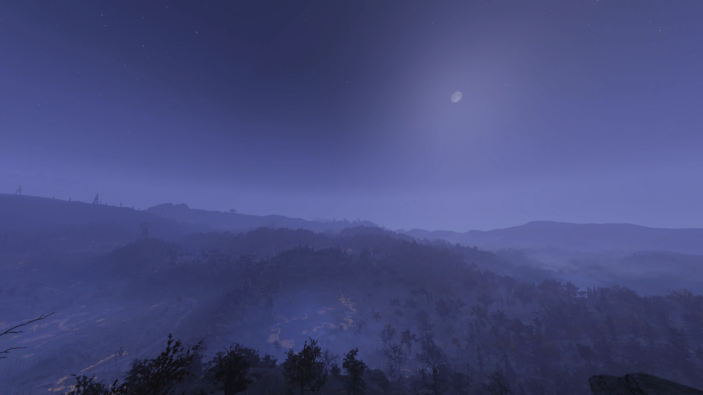
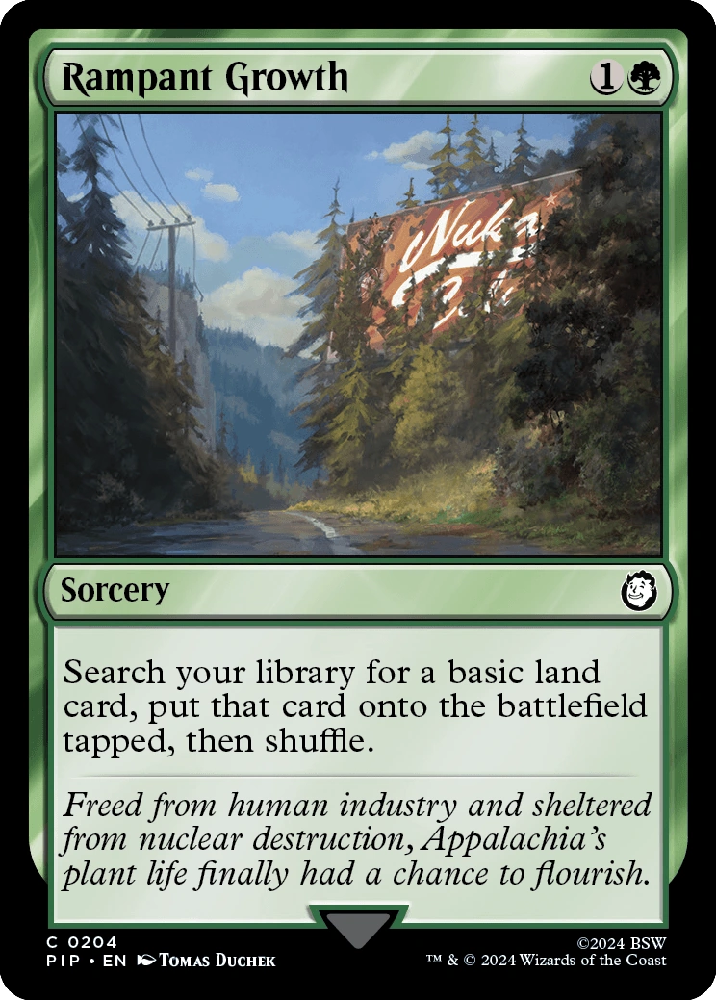
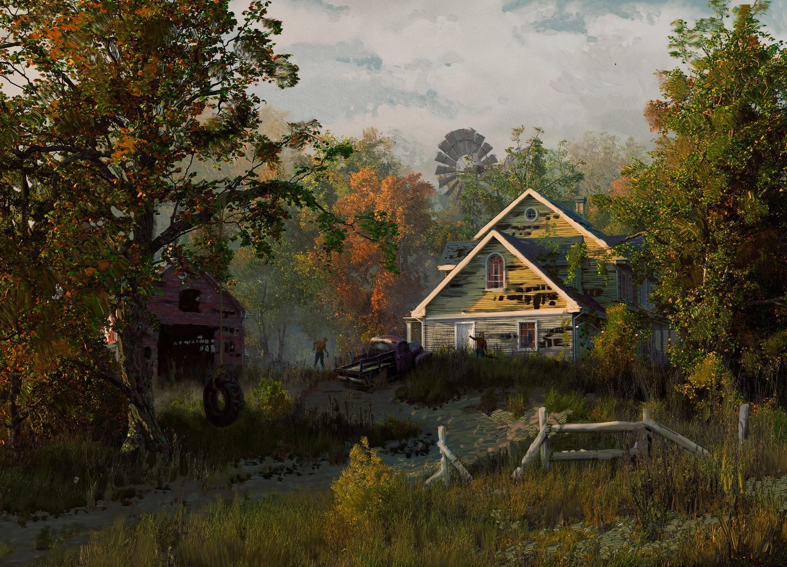
アパラチアの記事を翻訳してみて改めて感じるのは、このゲームの世界観の奥深さですね。
ウエストバージニア州という実在の土地を舞台にしながら、鉱業の歴史、オートメーション化による失業問題、大企業による環境破壊という現実的なテーマが核戦争後の世界と見事に絡み合っている。
8つのリージョンそれぞれに明確な個性があるのも素晴らしいところで、森林地帯の穏やかな緑から始まって、積灰の山の灰とスモッグ、毒の峡谷の不気味な白い粉、クランベリー湿原の赤い植物と高層ビル群…と探索するたびに新しい景色が広がるんですよね。
個人的には荒れた境域の山岳地帯が好きで、世界の頂上やホワイトスプリング・リゾートの存在感は格別です。
スカイライン・バレーやバーニング・スプリングスの追加でバージニアやオハイオまで広がったのも嬉しいポイントで、まだまだアパラチアには語られていない物語がたくさん眠っていそうです。
スコーチ病で一度は人類が全滅したこの地に、Vault 76から出た私たちが再び文明を築いていく…というストーリーは何度プレイしてもグッときます。
ファウンデーション、レイダー、B.O.S、そして再建されたレスポンダーズ。
それぞれの勢力が異なる理想を持ちながらもこの地に根を下ろしていく過程を見届けるのが、Fallout 76の醍醐味ではないかと思います。
This article was created by translating and editing Appalachia from Nukapedia: The Fallout Wiki.
Licensed under the Creative Commons Attribution-Share Alike License (CC BY-SA 3.0).
コミュニティ維持のため、寄付を受け付けております。
> COMMENTS